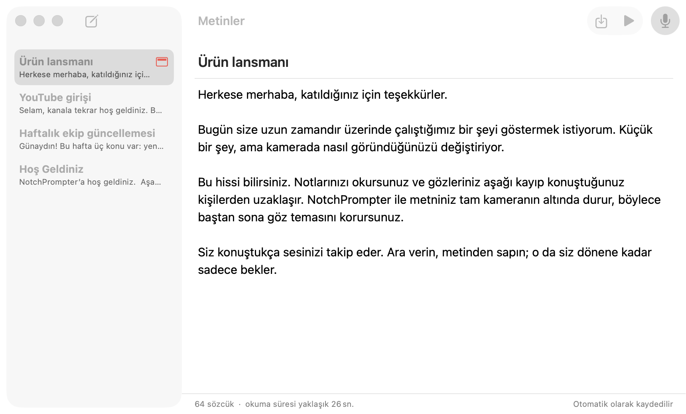
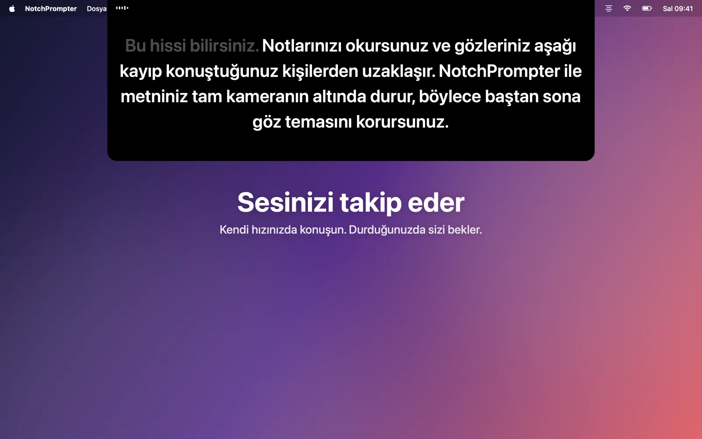
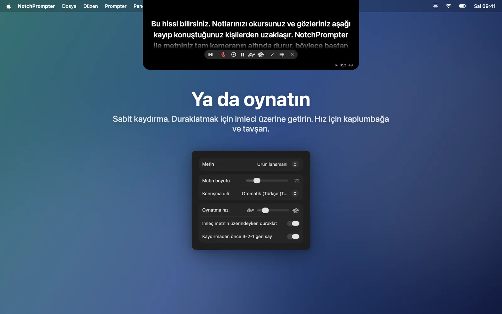
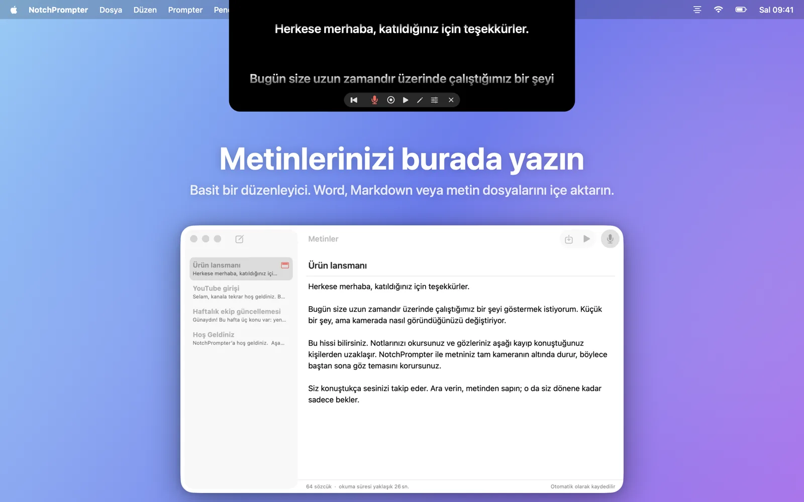
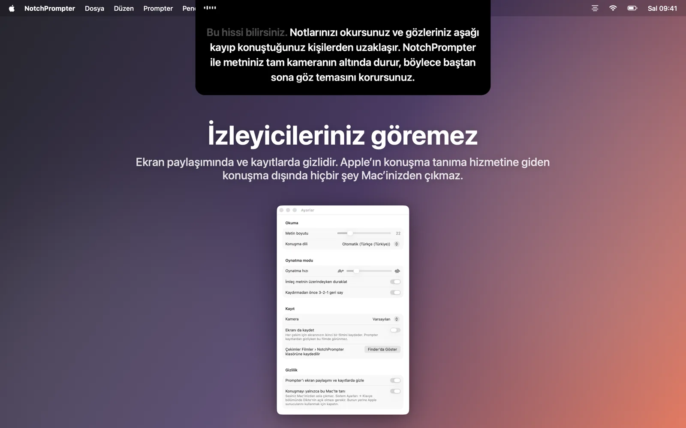
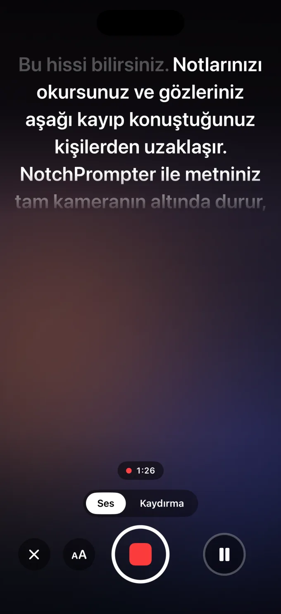

Okurken göz temasını koruyun
NotchPrompter metninizi tam kameranın altına yerleştirir ve sesinizi takip eder. Her dilde, ileri atladığınızda bile ve tamamen Mac'inizde.
Ücretsiz ve açık kaynak. macOS 15 Sequoia veya sonrası için. En iyi, çentikli bir MacBook'ta çalışır; üstünde kamera olan her Mac'te de çalışır.
İş başında görün
Okuyun, duraklayın, ileri atlayın. Prompter size ayak uydurur.
İhtiyacınız olan her şey. Önünüzde hiçbir engel yok.
Kameranızın altında küçük siyah bir panel, birkaç anlaşılır düğme, metinleriniz için küçük bir düzenleyici ve bir kayıt düğmesi.
Sesinizi takip eder
Mikrofona tıklayın ve konuşun. Sıradaki kelimeler her zaman tam kameranın altındadır. Söylediğiniz kelimeler soluklaşır.
Her dil, otomatik olarak
NotchPrompter metninizin hangi dilde olduğunu görür ve o dili dinler. İngilizce, Norveççe, Almanca, İspanyolca, Japonca ve düzinelerce dil daha.
Atladığınızda ayak uydurur
Bir cümleyi atlayın, bir kelimeyi değiştirin, "ııı" deyin. Nerede olduğunuzu bulur ve sizinle birlikte ileri atlar. Duraklayın, o da bekler.
Ya da oynatın
3-2-1 geri sayımıyla akıcı kaydırma. Duraklatmak için imleci üzerine getirin, hızı ayarlamak için kaplumbağa ile tavşanı kullanın.
Yerleşik düzenleyici
Tüm metinlerinizi tek bir yerde yazın ve saklayın. Word, Markdown, RTF veya metin dosyalarını içe aktarın. Otomatik olarak kaydeder.
Kendinizi kaydedin
Okurken kameranız ve mikrofonunuzla kendinizi çekmek için kayıt düğmesine basın. Her çekim, Filmler klasörünüze bir film olarak kaydedilir.
İzleyicileriniz göremez
Ekran paylaşımında, ekran görüntülerinde ve kayıtlarda gizlidir. Yalnızca siz görebilirsiniz.
Tamamen Mac'inizde çalışır
Konuşma bulutta değil, Mac'inizde tanınır. Hesap yok, izleme yok. Metinleriniz ve kayıtlarınız Mac'inizden asla çıkmaz.
Metinleriniz bir tık uzağınızda
Düzenleyiciyi açmak için prompter'daki kaleme tıklayın. Bir metin seçin, mikrofona tıklayın ve konuşmaya başlayın.
- Metninizi yazın ya da yapıştırın veya bir dosyayı içe aktarın.
- Sesle Oku düğmesine basın.
- Kameraya bakın ve konuşun.

Kamera için tasarlandı
Görüntülü görüşmeler, YouTube, kurslar, web seminerleri ve sunumlar.




iPhone'da da var
iPhone için NotchPrompter metninizi ön kameranın hemen altına yerleştirir, sesinizi takip eder ve sizi çeker. Her çekim doğrudan Fotoğraflar'a gider.
Ücretsiz deneyebilirsiniz. Kaydırma modu, düzenleyici ve alıştırma metni ücretsizdir; ayrıca ses takibi ve kayıt içeren 3 ücretsiz çekim hakkınız var. Sonrasında tek bir satın alım her şeyin kilidini kalıcı olarak açar: Norveç'te 49 kr ya da kendi para biriminizde aynı tutar. Abonelik yok.
iPhone uygulaması açık kaynak değildir. Mac uygulamasıyla aynı açık kaynaklı ses motorunu kullanır. Yakında App Store'da, iOS 18 veya sonrası için.

Sorular
Gerçekten ücretsiz mi?
Evet. Mac için NotchPrompter, MIT lisansı altında ücretsiz ve açık kaynaktır. Reklam yok, abonelik yok, hesap yok. Kaynak kodu GitHub'da; orada hata bildirebilir, özellik önerebilir veya geliştirilmesine yardım edebilirsiniz.
iPhone için NotchPrompter'ı ücretsiz deneyebilirsiniz; ses takibini ve kaydı kullanmaya devam etmek için tek seferlik bir satın alım yeterli. Devamını okuyun.
Çentik olmadan çalışır mı?
Evet. Çentiksiz bir Mac'te prompter ekranın üstünden, menü çubuğunun altından sarkar; burası da yine kameraya yakındır.
Ses takibi hangi dilleri destekliyor?
Düzinelerce dili; aralarında İngilizce, Norveççe, Almanca, Fransızca, İspanyolca, Çince ve Japonca var. NotchPrompter metninizin hangi dilde olduğunu görür ve o dili dinler, yani hiçbir şey ayarlamanız gerekmez. Ayarlar'dan başka bir dil seçebilirsiniz.
Ekranımı paylaştığımda başkaları prompter'ı görür mü?
Hayır. Varsayılan olarak ekran paylaşımında, ekran görüntülerinde ve kayıtlarda gizlidir. Göstermek isterseniz bunu Ayarlar'dan kapatabilirsiniz.
Buluta bir şey gidiyor mu?
Hayır. Konuşma Mac'inizde tanınır (Sistem Ayarları'nda Dikte açıkken) ve NotchPrompter'ın sunucusu yoktur. Ses takibi asla ses kaydetmez. Yalnızca kayıt düğmesine bastığınızda bir film kaydedilir, o da kendi Filmler klasörünüze. Gizlilik politikasını okuyun.
Klavye kestirmeleri neler?
Prompter'a tıklayın, ardından: Boşluk oynat/duraklat, V ses, C kayıt, R başa dön, ↑ ↓ hız, + − metin boyutu, E düzenleyici, Esc durdur.